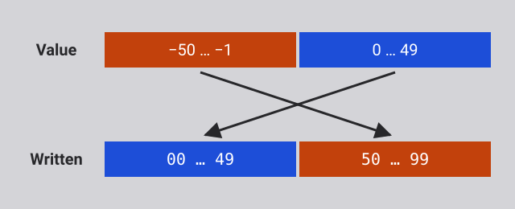
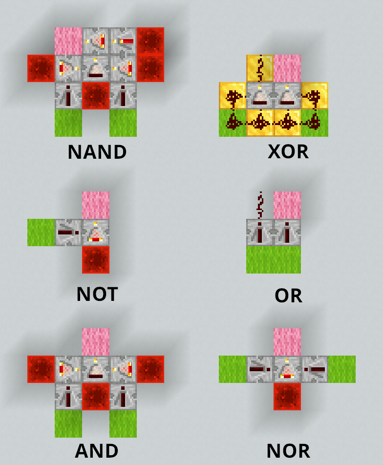
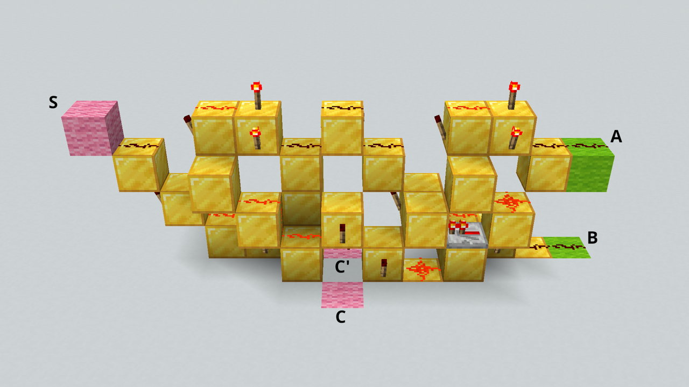

Modern CPUs have instructions and hardware for multiplication and division, and even for floating-point numbers or much more complex operations like hashing or encryption.
How a computer works
What a computer physically does when it runs a program, from the bottom up, and what the processes of a deployment actually are.
On this page
Table of contents
A significant portion of this subject is inspired by Code: The Hidden Language of Computer Hardware and Software, by Charles Petzold, which you should read if you want more detailed information on the subject.
Recommended reading
Everything is numbers
Everything a computer holds is made of bits. A bit is a single binary digit:
0 or 1. Eight bits make a byte, the unit a computer’s memory is counted in.
Eight bits can be set in 2⁸ = 256 different ways, from 00000000 to
11111111.
Here’s a byte:
01010011
Nothing in the bits themselves says what they mean. The same byte can be a number, a shade of gray, a color, part of a color (R, G or B), a letter, or an instruction for the processor. The meaning comes from the program that reads it, not from the bits.
Counting in binary
Read as a number written in base 2, or binary, each position of a byte is worth twice the position to its right, as each position of a decimal number is worth ten times the position to its right:
| Position value | 128 | 64 | 32 | 16 | 8 | 4 | 2 | 1 |
|---|---|---|---|---|---|---|---|---|
| Bit | 0 | 1 | 0 | 1 | 0 | 0 | 1 | 1 |
01010011 has a 1 in the positions worth 64, 16, 2 and 1, so it is the decimal
number 64 + 16 + 2 + 1 = 83. A byte read this way holds any whole number from
0 (00000000) to 255 (11111111).
To write a decimal number in binary, go the other way: take the largest position value that fits, write a 1 there, subtract it, and go on with what is left. 83 is 64 + 19, 19 is 16 + 3, and 3 is 2 + 1.
The same byte, read differently
Read as a gray level, a byte goes from black (0) to white (255). 83 is about a third of the way, a dark gray.
Read as a color, the same byte can be split into how much red, green and
blue light to mix: 3 bits for red, 3 for green and 2 for blue, a scheme called
8-bit color. 010 100 11 is a little red, some green and all the blue
there is: a light sky blue.


An image is a grid of such colors, called pixels, so an image is a list of numbers, one per pixel, row by row. This Mario is 12 pixels wide and 16 high: 192 pixels, so 192 bytes with an 8-bit color scheme. It would be 576 bytes with a modern 24-bit color scheme, 8 bits for each of red, green and blue.
A video is a sequence of images shown fast enough for the eye to see movement, so it is a longer list of numbers.

Read as text, a byte is a character, through a table that gives every
character a number. In ASCII, the table most others build on, 83 is
the letter S. UTF-8, the encoding of almost all text on the web,
starts with the same 128 characters, each stored as the same single byte.
Processing data is arithmetic
A computer does not know what letters, colors or images are. It only manipulates numbers, but since everything is stored as numbers, manipulating numbers is enough to manipulate any data:
- Changing a letter’s case is adding or subtracting 32:
Sis 83 andsis 115. In binary, 32 is a single bit, so it is the only bit that differs between the two letters. - Inverting a gray image, black for white, is subtracting each pixel’s value from 255.
- Brightening an image is adding the same amount to every pixel, stopping at the maximum.
- Fading a video to black is multiplying every pixel by a fraction that gets smaller from one frame to the next, until it reaches 0.
Every program you use, however complex, comes down to calculations like these, on a very large amount of numbers.
Adding in binary
Binary numbers add like decimal ones, column by column from the right, carrying
into the next column whatever does not fit. In binary, 1 + 1 does not fit in one
digit: it is 10 (2 in decimal), so you write the 0 and carry the 1:
111 carries
0111 7
+ 0011 3
------
1010 10Every column adds two bits, plus the carry from the column on its right, and gives a sum bit and a carry for the column on its left. Adding two bits gives these two bits:
| A | B | Sum | Carry |
|---|---|---|---|
| 0 | 0 | 0 | 0 |
| 0 | 1 | 1 | 0 |
| 1 | 0 | 1 | 0 |
| 1 | 1 | 0 | 1 |
The sum is 1 when exactly one of the two bits is 1. The carry is 1 only when both are.
From switches to a machine
There is no magic in a computer, only switches controlled by electricity.
Say that 1 means current and 0 means no current: a switch whose current
closes another switch can make one bit control another. Wired in different
ways, such switches make the operations of Boolean logic, the !, && and ||
of your programming languages, which are called logic gates.
Here, two switches in a row make AND: the lamp is lit only when A and B are both 1. Click the switches to try it.
Computers use binary because “no current” and “current” are easy to tell apart. Ten levels of current, one per decimal digit, would not be.
The first computers used relays, electromagnets moving a metal bar; then vacuum tubes; and since the 1950s, transistors. A modern processor holds billions of transistors on one chip. The logic does not depend on what the switches are made of.
The sum and carry above are two logic gates: the sum is XOR, “exclusive or” (A or B, but not both), and the carry is AND. Together, they add two bits.
Click A and B to try it: with one of them at 1, SUM is 1. Set both to 1, and
SUM goes back to 0 while the carry, Cout, becomes 1.
Chain such circuits, one per column, and you have an adder. Wired in other ways, gates can also remember a bit, select one of several inputs to pass on, do the opposite and send one input to one of several outputs, and count. The presentation shows each of these circuits working. That is everything a processor needs.
What matters here is not how switches are wired into gates, nor what the gates’ symbols look like: you do not need to remember either. What matters is what such circuits can do. Manipulating numbers, and therefore processing any data, takes nothing more than fairly simple electrical circuits, and they do it very fast.
Memory is addressed
A computer’s memory is a long row of cells, usually of one byte each, and every cell has a number: its address. The processor reads or writes a cell by giving its address. Any cell can be reached directly, in any order, which is the “random access” of RAM, random access memory.
Each bit of a cell is a small circuit that keeps the last value it was given. This one stores DATA while WRITE is 1, and keeps it once WRITE is back to 0, whatever DATA does afterwards.
The number of bits in an address decides how many cells can be reached. A 4-bit address gives 2⁴ = 16 addresses, so a 16-byte memory. A 32-bit address gives 4,294,967,296 bytes (4 GiB), and a 64-bit address, far more than any computer has.
The clock
A clock is a circuit that switches between 0 and 1 at a steady pace:
It keeps everything in the processor in step: every component that holds a value takes its new value on the same tick, so each step’s result is ready before the next step uses it. A processor’s speed in gigahertz is how many billions of ticks its clock gives per second.
The machine demonstrated in the presentation takes one tick for each step of its work, to keep it simple. A real processor splits an instruction into many smaller steps, over several ticks, and works on many instructions at once.
Running a program
A program is a sequence of instructions for the processor, and each instruction is a number, stored in memory like any other data. The list of instructions a processor understands is its instruction set. The machine demonstrated in the presentation has this one, with 8-bit instructions: 4 bits say what to do, and 4 bits give an address in its 16-byte memory:
| Instruction | Bits | Effect |
|---|---|---|
LOAD x |
0001 xxxx |
memory[x] → acc |
STORE x |
0100 xxxx |
acc → memory[x] |
ADD x |
0010 xxxx |
acc + memory[x] → acc |
SUB x |
0011 xxxx |
acc − memory[x] → acc |
JUMP x |
0110 xxxx |
go to instruction x |
JUMPZ x |
1000 xxxx |
if acc = 0, go to instruction x |
HALT |
1111 0000 |
stop |
memory[x] is the value in the cell at address x (4 bits). acc is the
accumulator, a register: a small memory inside the processor, built of
the same circuits as memory cells, which holds a value while the processor works
on it. Every calculation of this machine goes through its accumulator: it loads
a number into it, adds to it or subtracts from it, and stores the result back
into memory. This machine has a single register; a modern processor has many,
such as the 16 general-purpose registers of an x86-64 processor.
The instructions come in three kinds:
- Moving data between memory and the processor:
LOADandSTORE. - Computing:
ADDandSUB, done by the processor’s arithmetic logic unit (ALU), which is built around the adder. - Deciding which instruction runs next: the jumps. Every
ifand every loop of your programs comes down to such jumps.
A real processor has many more instructions, of these kinds and a few others.
The processor does what it is told
The processor keeps the address of the next instruction in its program counter. It repeats the same cycle for every instruction: it fetches the instruction at that address from memory, decodes it, and executes it. Then the program counter moves on to the next instruction, unless the instruction was a jump, which sets it to a new address.
The processor has no intelligence of its own. It does not choose anything: the
program does. A jump such as JUMPZ makes the next instruction depend on the
last result, but that decision is written in the program, and the processor only
carries it out. Even when a device signals it from the outside, the processor
only jumps to instructions prepared in advance and follows them.
From program to instructions
You do not write instructions by hand. You write source code, in a programming language made for people: it is easy to read, to write and to understand (if you learned how). The processor understands none of it. What it understands is its instructions: numbers, each one a tiny step. A program in any language has to become instructions before the processor can run it.
This small JavaScript program multiplies 3 by 2 the way the machine demonstrated in the presentation does. Since that machine cannot multiply: add 3 twice (or however many times is needed), decrementing the counter until it reaches 0:
let a = 3;
let counter = 2;
let result = 0;
do {
result = result + a;
counter = counter - 1;
} while (counter !== 0);The calculations become instructions that move values between memory and the accumulator and compute with them, and the loop becomes jumps. The values themselves, variables and numbers alike, are kept in memory cells.
You could just as well write it the way you would naturally, with the multiplication operator:
let result = 3 * 2;That program could still run on the same machine. Translating it for a processor that cannot multiply, a compiler would turn the multiplication into repeated additions, much like the loop above.
A compiler translates a program into instructions for a specific instruction set, either ahead of time or as it runs. Examples: C, Go, Rust, Java, Erlang.
An interpreter works differently: it is itself a program made of instructions, which reads your program as data and does what it says. Examples: Python, PHP, Ruby, Bash.
Either way, what the processor runs is instructions.
The machine
The machine demonstrated in the presentation: a processor and a memory of sixteen cells, connected by an 8-bit data bus and a 4-bit address bus. Its memory holds the multiplication above as nine instructions, followed by its data. Step through it to watch it run.
This diagram shows a processor and a memory of sixteen cells, connected by a data bus and an address bus. The memory holds a program that multiplies 3 by 2 by adding 3 twice, and leaves its result in cell 14. The program counter is at 0, ready to start.
A processor and a memory, connected by a data bus and an address bus.
The memory has sixteen cells, numbered 0 to 15, each holding 8 bits.
Cells 0 to 8 hold the program: its instructions, one per cell. It multiplies 3 by 2, by adding 3 twice.
Cells 12 to 15 hold its data, the numbers it works on, in the same memory as its instructions.
The address bus carries 4 bits, enough to pick one of the sixteen cells, as the address inputs of the addressable memory did. The data bus carries the 8 bits of a cell, to the memory or from it.
The processor, an 8-bit CPU, runs the program: it reads each instruction from memory, then does what it says.
Inside the processor: the program counter, the selector, the control unit with its instruction register, the accumulator, the ALU and the clock.
The processor knows none of this: to it, the memory holds only bits. A cell is an instruction or a number only once the processor uses it as one.
Fetch: the clock ticks, and the control unit starts fetching the next instruction from memory.
The control unit tells the selector to let the program counter’s address through, and the memory to read the cell at that address, 0.
The control unit tells the memory to put the bits of cell 0 on the data bus, and the instruction register to take them.
The control unit tells the program counter to add 1, ready for the next instruction.
Decode: the clock ticks, and the control unit starts decoding the instruction in the instruction register, to know what to do.
The instruction’s 4 bits of operation are LOAD, and its 4 bits of address 14: the bits of cell 0 were an instruction.
Execute: the clock ticks, and the control unit starts carrying out the instruction.
The control unit tells the selector to let the instruction’s address through, and the memory to read the cell at that address, 14.
The control unit tells the memory to put the bits of cell 14 on the data bus, and the accumulator to take them: the accumulator holds 0.
Fetch: the clock ticks, and the control unit has the memory read cell 1, at the program counter’s address, into the instruction register.
The control unit tells the program counter to add 1, ready for the next instruction.
Decode: the clock ticks, and the control unit decodes the instruction in the instruction register.
The instruction’s 4 bits of operation are ADD, and its 4 bits of address 12.
Execute: the clock ticks, and the control unit has the memory read cell 12, at the instruction’s address, and has the ALU add it to the accumulator.
The ALU gives back 0 + 3 = 3, and the control unit tells the accumulator to take it: the accumulator holds 3.
Fetch: the clock ticks, and the control unit has the memory read cell 2, at the program counter’s address, into the instruction register.
The control unit tells the program counter to add 1, ready for the next instruction.
Decode: the clock ticks, and the control unit decodes the instruction in the instruction register.
The instruction’s 4 bits of operation are STORE, and its 4 bits of address 14.
Execute: the clock ticks, and the control unit has the memory write the accumulator’s bits, 3, into cell 14, at the instruction’s address.
Fetch: the clock ticks, and the control unit has the memory read cell 3, at the program counter’s address, into the instruction register.
The control unit tells the program counter to add 1, ready for the next instruction.
Decode: the clock ticks, and the control unit decodes the instruction in the instruction register.
The instruction’s 4 bits of operation are LOAD, and its 4 bits of address 13.
Execute: the clock ticks, and the control unit has the memory read cell 13, at the instruction’s address, into the accumulator: the accumulator holds 2.
Fetch: the clock ticks, and the control unit has the memory read cell 4, at the program counter’s address, into the instruction register.
The control unit tells the program counter to add 1, ready for the next instruction.
Decode: the clock ticks, and the control unit decodes the instruction in the instruction register.
The instruction’s 4 bits of operation are SUB, and its 4 bits of address 15.
Execute: the clock ticks, and the control unit has the memory read cell 15, at the instruction’s address, and has the ALU subtract it from the accumulator, with the subtract signal on.
The ALU gives back 2 − 1 = 1, and the control unit tells the accumulator to take it: the accumulator holds 1.
Fetch: the clock ticks, and the control unit has the memory read cell 5, at the program counter’s address, into the instruction register.
The control unit tells the program counter to add 1, ready for the next instruction.
Decode: the clock ticks, and the control unit decodes the instruction in the instruction register.
The instruction’s 4 bits of operation are STORE, and its 4 bits of address 13.
Execute: the clock ticks, and the control unit has the memory write the accumulator’s bits, 1, into cell 13, at the instruction’s address.
Fetch: the clock ticks, and the control unit has the memory read cell 6, at the program counter’s address, into the instruction register.
The control unit tells the program counter to add 1, ready for the next instruction.
Decode: the clock ticks, and the control unit decodes the instruction in the instruction register.
The instruction’s 4 bits of operation are JUMPZ, and its 4 bits of address 8.
Execute: the clock ticks. The ALU’s zero wire is off, since its last result was not 0: the control unit leaves the program counter at 7.
Fetch: the clock ticks, and the control unit has the memory read cell 7, at the program counter’s address, into the instruction register.
The control unit tells the program counter to add 1, ready for the next instruction.
Decode: the clock ticks, and the control unit decodes the instruction in the instruction register.
The instruction’s 4 bits of operation are JUMP, and its 4 bits of address 0.
Execute: the clock ticks, and the control unit tells the program counter to take the instruction’s address, 0: the program goes back to cell 0.
Fetch: the clock ticks, and the control unit has the memory read cell 0, at the program counter’s address, into the instruction register, and tells the program counter to add 1.
Decode: the clock ticks, and the control unit decodes the instruction in the instruction register: LOAD 14. The program counter has counted to 1.
Execute: the clock ticks, and the control unit has the memory read cell 14, at the instruction’s address, into the accumulator: the accumulator holds 3.
Fetch: the clock ticks, and the control unit has the memory read cell 1, at the program counter’s address, into the instruction register, and tells the program counter to add 1.
Decode: the clock ticks, and the control unit decodes the instruction in the instruction register: ADD 12. The program counter has counted to 2.
Execute: the clock ticks, and the control unit has the memory read cell 12, at the instruction’s address, and the ALU add it to the accumulator: 3 + 3 = 6, which the accumulator takes.
Fetch: the clock ticks, and the control unit has the memory read cell 2, at the program counter’s address, into the instruction register, and tells the program counter to add 1.
Decode: the clock ticks, and the control unit decodes the instruction in the instruction register: STORE 14. The program counter has counted to 3.
Execute: the clock ticks, and the control unit has the memory write the accumulator’s bits, 6, into cell 14, at the instruction’s address.
Fetch: the clock ticks, and the control unit has the memory read cell 3, at the program counter’s address, into the instruction register, and tells the program counter to add 1.
Decode: the clock ticks, and the control unit decodes the instruction in the instruction register: LOAD 13. The program counter has counted to 4.
Execute: the clock ticks, and the control unit has the memory read cell 13, at the instruction’s address, into the accumulator: the accumulator holds 1.
Fetch: the clock ticks, and the control unit has the memory read cell 4, at the program counter’s address, into the instruction register, and tells the program counter to add 1.
Decode: the clock ticks, and the control unit decodes the instruction in the instruction register: SUB 15. The program counter has counted to 5.
Execute: the clock ticks, and the control unit has the memory read cell 15, at the instruction’s address, and the ALU subtract it from the accumulator, with the subtract signal on: 1 − 1 = 0, which the accumulator takes. The result is 0: the ALU’s zero wire is on.
Fetch: the clock ticks, and the control unit has the memory read cell 5, at the program counter’s address, into the instruction register, and tells the program counter to add 1.
Decode: the clock ticks, and the control unit decodes the instruction in the instruction register: STORE 13. The program counter has counted to 6.
Execute: the clock ticks, and the control unit has the memory write the accumulator’s bits, 0, into cell 13, at the instruction’s address.
Fetch: the clock ticks, and the control unit has the memory read cell 6, at the program counter’s address, into the instruction register, and tells the program counter to add 1.
Decode: the clock ticks, and the control unit decodes the instruction in the instruction register: JUMPZ 8. The program counter has counted to 7.
Execute: the clock ticks. The ALU’s zero wire is on, since its last result was 0: the control unit tells the program counter to take the instruction’s address, 8.
Fetch: the clock ticks, and the control unit has the memory read cell 8, at the program counter’s address, into the instruction register, and tells the program counter to add 1.
Decode: the clock ticks, and the control unit decodes the instruction in the instruction register: HALT. The program counter has counted to 9.
Execute: the clock ticks a last time, and the control unit stops it, since the program is done.
The program is done, and the machine has stopped: cell 14 holds its result, 6.
The memory never knows which cells are instructions and which are data. The same bits would be read as an instruction if the program counter reached them.
Simple as it is, this machine is a real computer. With a wider address bus, and therefore a larger memory, it could run any program, as long as the program and its data fit in that memory. It is also conceptually very close to the processors of the 1970s, such as the Intel 8080.
A handful of instructions is enough because every program, in any language, is built of three building blocks, and the machine has all three:
- Sequence: instructions run one after the other, as the program counter steps through memory.
- Selection: the program chooses between two paths, depending on a value.
JUMPZjumps or not, depending on the last result. Everyifis a selection. - Iteration: the program goes back to repeat instructions.
JUMPgoes back to an earlier address, and aJUMPZdecides when to stop. Every loop is an iteration.
In the multiplication, the body of the loop is a sequence, and its
while (counter !== 0) is both a selection and an iteration: it chooses whether
to go back to do. The machine splits it into two jumps: JUMPZ 8 leaves the
loop when the counter reaches 0, and JUMP 0 goes back to its start.
That these three building blocks are enough is the structured program
theorem, proved by Corrado Böhm and Giuseppe
Jacopini in 1966. It became the basis of structured
programming, which, from the late 1960s, replaced the
goto of early languages, a jump to any line of a program, with ifs and
loops.
A particular place, at a particular time
This is the one thing to take away from the machine: a running program is instructions in memory, executed by a processor. Its instructions and its data sit in physical memory chips, in a particular computer, and a specific processor executes them, one after the other, at a particular moment.
A modern processor is far faster and more complex than this machine, but it still works this way.
Always keep in mind where and when a program runs. Whenever you start a program, deploy one, or wonder why one does not behave as you expect, ask which computer it runs on, in whose memory, on which processor, and when. A program running on your computer and the same program running on your server are two different things happening in two different places. A program that has stopped is not running anywhere, however many copies of its files exist.
The operating system and processes
Memory (RAM) is volatile: it loses its contents when the power is off. Programs and files are kept in storage, a disk or an SSD, which is persistent: it keeps its contents without power.
The processor cannot run anything straight from storage, and cannot even read it by address. A program has to be copied from storage into memory first, which the processor asks the disk’s controller to do. Copying programs into memory and running them is one of the jobs of the operating system.
Booting
At power-on, the memory is empty. Booting is a chain of programs: each one has the next copied from the storage into memory, then jumps to its first instruction.
- The processor runs the firmware (UEFI), from a chip on the motherboard.
- The firmware loads the bootloader (GRUB) from the disk into memory.
- The bootloader loads the kernel (Linux), the core of the operating system.
- The kernel starts the first process, also called the init process, with process ID 1 (systemd on Linux).
- The init process starts everything else: the SSH server, a web server, your application.
You do not need to remember these stages, nor the names of the programs. What matters is that a computer starting up is not magic either. It is a sequence of ordinary programs, each one copying the next into memory and handing over to it, until the operating system, the program that manages all the others, is running.
Every other process on the machine was started either by the init process, or by a process that it started, which is why the process tree has init (PID 1) at its root.
A cloud server is usually a virtual machine: its firmware is provided by the cloud provider’s software instead of a chip, but the chain is otherwise the same.
Your own computer boots the same way. On Windows, the bootloader is the Windows
Boot Manager, the kernel is ntoskrnl.exe, and several programs share the init
process’s job. On macOS, the init process is launchd.
Programs and processes
A program is inert files in the storage: source files, or compiled ones.
A process is a program being executed: its instructions copied into memory, plus the data it creates as it runs, executed by the processor. Each process has its own memory, which the kernel gives it when it starts and frees when it ends. The same program can run as several processes at once, each with its own memory: two SSH sessions to your server are two shells running the same program.
Step through the boot of a server, then the programs it runs once booted:
This diagram shows the processor as a stack of cores, connected by the buses to the firmware, the memory, the disk controller and the device controllers. The storage and the devices are behind their controllers, and a device can interrupt the processor. Once booted, the memory holds the kernel, init and, on a server, the SSH server, each with its data. A program is an inert file in the storage; a process is a program copied into memory and being executed by the processor.
The machine is powered on. There is no program or data in memory yet.
The processor starts at an address that leads to the firmware, and runs its instructions one after the other.
The firmware asks the disk controller to copy the bootloader from the storage into memory, by writing to the controller’s registers.
The disk controller copies the bootloader into memory over the buses, giving the addresses to write at itself, without the processor.
The processor jumps to the bootloader’s first instruction, in memory: it now runs the bootloader.
The bootloader runs: the processor reads its instructions from memory, and runs them one after the other.
The bootloader asks the disk controller to copy the kernel from the storage into memory.
The disk controller copies the kernel into memory, while the bootloader waits for the copy to be done.
The processor jumps to the kernel’s first instruction: it now runs the kernel, the core of the operating system.
The kernel runs, and prepares the machine: the devices, the memory, the other cores, the files on the storage.
As it runs, the kernel allocates memory for its data: its stack and its heap, which the file never held.
The kernel frees the memory the bootloader was copied into: the bootloader is no longer needed.
The kernel asks the disk controller to copy init, the first program it starts, from the storage into memory.
While the disk controller copies init, the processor has nothing to run: the kernel stops it until the copy is done.
Once done, the disk controller interrupts the processor, which jumps to the kernel’s code that handles it, wherever it was.
The kernel jumps to init’s first instruction: the processor now runs init.
Init runs: the processor reads its instructions from memory and runs them one after the other, and init asks the kernel for memory for its data.
On a laptop, init asks the kernel to copy the desktop from storage, and run it: the GUI, several programs drawn as one. From now on, the processor fetching instructions from memory is no longer shown, but it still happens whenever the cog turns.
The user opens a browser: the desktop asks the kernel to copy it from storage, and run it.
A key is pressed: the keyboard’s controller interrupts the processor, and the kernel hands the key to the desktop, which passes it to the browser.
The browser draws the letter, and the desktop sends the new picture of the screen to the graphics card.
A cloud server runs no GUI: once booted, only the kernel and init are in memory.
With nothing to run, the kernel stops the processor until an interrupt from a device wakes it.
Nobody sits in front of a cloud server: it has no keyboard and no graphics card.
Instead of a GUI, init asks the kernel to copy the SSH server from storage, and run it: it waits for connections.
Until a connection arrives, nothing runs: the kernel stops the processor again.
A connection arrives: the network controller interrupts the processor, and the kernel hands what arrived to the SSH server.
The SSH server asks the kernel to copy an SSH session and a shell from storage, and run them: two programs drawn as one.
The user types ls: the keystrokes arrive over the network, and the kernel hands them to the SSH session, which passes them to the shell.
The shell asks the kernel to copy ls from storage, and run it: its output goes back over the network.
ls is done: it ends, and the kernel frees its memory.
A second connection arrives over the network, for another login.
The SSH server starts a second SSH session and shell: the same programs, running twice, each with its own memory.
The first shell runs sleep, which waits without using the processor.
The second shell runs ps, which asks the kernel for every process running and prints them, over the network.
ps is done: it ends, and the kernel frees its memory.
The second user disconnects: their session and shell end, and the kernel frees their memory.
sleep is done waiting: it ends, and the kernel frees its memory.
The first user disconnects too. Only the SSH server is left, waiting for the next connection.
The server is idle again: until the next connection, the kernel stops the processor.
A program is a file: inert bytes in the storage, such as init, until the kernel copies it into memory.
A process is a program copied into memory and being executed: the processor reads a program’s instructions from memory, and runs them one after the other.
What the operating system does
The operating system is the program that manages the computer for all the others:
- It runs programs as isolated processes. It copies programs from the storage into memory and starts them. No process can read or write another process’s memory.
- It hides the hardware behind system calls. Programs do not talk to a physical disk or a network card directly: they ask the operating system, with system calls. It organizes the bytes of a disk into files in directories, and gives programs sockets to communicate over the network.
- It decides who can do what, with users, groups and permissions.
Programs such as the shell, ls or ssh are not the operating system: they
are ordinary programs that make system calls, like the programs you write.
Isolated processes communicate through channels
Since processes are isolated, they can only communicate through channels the operating system provides:
- Files: one process writes a file, and another reads it.
- Pipes: the standard output of one process goes into the standard input of another, as in a shell pipeline.
- Sockets: processes communicate over the network with them, and two processes on the same machine can use them too.
- Shared memory: two processes ask the operating system for the same region of memory, which both then see.
Guess It and PostgreSQL, from the SFTP deployment, are two processes on the same
server. Neither can read the other’s memory. Guess It talks to PostgreSQL
through a socket: its database URL says localhost:5432, a port on the loopback
address, which never leaves the server (it could if you used an IP address).
This diagram shows the booted server, running the SFTP deployment. Its memory holds the kernel, init, the SSH server, an SSH session and its shell, Guess It and PostgreSQL, each a process with its own memory.
The booted server, running the SFTP deployment.
Your deployment, on the machine
This is the architecture of the SFTP deployment, as you ran it:
In this diagram, your browser talks to the Guess It application running on your server. Guess It talks to the PostgreSQL database server also running on your server. You started Guess It manually in your SSH session, in a shell running on the server.
Your terminal is still connected to your server over SSH, PostgreSQL is running with the application’s database, and the application’s files are on the server.
You run npm run dev, as on your computer. Your shell starts Guess It, which listens on port 3000.
You open a browser on your computer.
You type your server’s public IP address and port into it. It connects to port 3000, where Guess It is listening.
It sends an HTTP request for the home page over the connection, and waits for the answer.
Guess It works: Node.js runs its JavaScript code, which needs the leaderboard from the database.
Guess It connects to PostgreSQL on port 5432, with the database URL you configured.
It sends its query over the connection.
PostgreSQL works, running the query, while Guess It waits for the answer.
The rows of the leaderboard travel back to Guess It.
Guess It works again, building the HTML page from the rows.
The page travels back over the connection to your browser, with its stylesheets and scripts.
Your browser works, displaying the page.
An architecture diagram like this one draws processes and the connections between them, and leaves the machine out. Everything in this chapter is still there, behind it:
- A process box is a program’s instructions and data in the memory of one computer. When the diagram shows a process working, a processor of that computer is fetching that process’s instructions from that memory and executing them. When it shows one waiting, the process uses no processor at all.
- The two sides of the network boundary are two computers, your own and your server, each with its own processor, its own memory and its own operating system.
- A connection between two processes is a channel provided by the operating system: a socket here. Between your computer and your server, the bytes go through both computers’ network controllers.
When you run npm run dev and press Enter, the processor of your server
executes the shell’s instructions, from the shell’s memory on your server. The
shell asks the kernel to start Node.js, whose program the kernel copies from
the storage into memory: a new process, with its own memory. From then on, your
server’s processor executes Node.js’s instructions, which carry out Guess It’s
JavaScript.
When your browser displays the page, it is your own computer’s processor that executes the browser’s instructions, from your own computer’s memory. A website is an assembly of processes on different computers, a client (the browser on your own computer) and a server (Node.js and PostgreSQL on your cloud server), each with its own processor and its own memory, communicating.
Go through the rest of the diagram’s steps, or through the exercise itself, again. At each step, ask yourself which computer it happens on, which program’s instructions are executed, by which processor, and out of which memory.
For any deployment such as the one you did in the SFTP deployment exercise, you should be able to draw the final state of the diagram (without the SSH processes). In this case, the browser, Guess It, and PostgreSQL: where they are running, and the connections between them.
Appendix: what’s in the box?
A shop might describe a desktop computer like this:
- Processor: AMD Ryzen 7 7700X, 8 cores, 4.5 GHz (up to 5.4 GHz), 32 MB L3 cache, 64-bit
- Memory: 32 GB RAM (2 × 16 GB), Corsair Vengeance DDR5 6000 MHz
- Storage: 2 TB Samsung 990 PRO NVMe M.2 SSD, PCIe 4.0, up to 7450 MB/s read
- Graphics card: NVIDIA GeForce RTX 4070, 12 GB GDDR6X
- Motherboard: ASUS TUF Gaming B650-PLUS WIFI, UEFI
- Network: Wi-Fi 6, 2.5 Gb Ethernet
- Power supply: 750 W
- Operating system: Windows 11 Home 64-bit
Every figure belongs to a part of the modern machine of the presentation:
| In the description | Part of the machine | What it means |
|---|---|---|
| 8 cores | Processor | Eight processors in one chip: up to eight programs, or parts of one, run at the same time |
| 4.5 GHz (up to 5.4) | Clock | Ticks per second, limited by the time signals take to cross the circuits, and by heat: it only speeds up while the chip stays cool |
| 64-bit | Registers and buses | The largest numbers added in one instruction, without carrying through software, and the size of an address |
| 32 MB L3 cache | Caches | The more of a program’s data fits near the cores, the less often they wait for the memory |
| 32 GB RAM (2 × 16 GB) | Memory | How much the running programs can hold at once. Two sticks, but one memory |
| DDR5 6000 MHz | Memory | How much data the memory sends per second once it has started (not how long it takes to arrive) |
| 2 TB SSD | Storage | How many programs and files are kept with the power off |
| NVMe, PCIe 4.0 | Disk controller | How the processor asks the storage for copies, and how the storage is connected |
| M.2 | None | The shape of the slot |
| Up to 7450 MB/s read | Disk controller | How fast programs and files are copied from the storage into memory, at best |
| RTX 4070, 12 GB | A device | A graphics card, with thousands of small processors of its own to compute pixels in parallel, and its own memory for them |
| B650, UEFI | Buses and firmware | The board everything plugs into, and the program the processor runs first at power-on |
| Wi-Fi 6, 2.5 Gb | Devices | Network devices: at most 2.5 billion bits per second on the cable |
| 750 W | None | The power the parts can draw at most: faster parts need more |
| Windows 11 64-bit | Storage, then memory | Not hardware: a program on the storage, copied into memory at boot, made of the processor’s 64-bit instructions |
Appendix: the cake is a lie
You may have noticed that some fundamental circuits were explained during the presentation, but that some of them were not shown in detail like the ALU or the program counter. This appendix is for those who want to know more, and see how some of these more complex circuits are built from the simpler ones.
A register
The machine demonstrated in the presentation has two registers: the accumulator, which holds the value being calculated, and the instruction register, in the control unit, which holds the instruction being decoded and executed. A register is memory, like the D latches of addressable memory: it keeps a value. But a D latch alone is not enough, because a register also has to:
- Take its new value at one precise instant.
ADDfeeds the accumulator’s value into the adder, and the adder’s result back into the accumulator. A latch follows its input for as long as WRITE is 1, so it would pass the result straight back to the adder, and the sum would run round in circles. - Keep its value until it is told to change it, however many times the clock ticks.
The edge-triggered D flip-flop solves the first problem. Its Q takes DATA’s value only at the moment CLK rises from 0 to 1, the rising edge, and keeps that value the rest of the time, whatever DATA does. The wedge on its clock input marks it as edge-triggered. The presentation shows how it is made of two D latches.
The clock starts paused in this diagram, so that you can drive it by hand. Clicking the 0/1 half of a paused clock flips its level, and its ▶ half lets it run:
- Change DATA a few times: Q does not move.
- Raise CLK when DATA is 1: Q takes DATA’s value.
- Change DATA again: Q still does not move, although CLK is 1.
- Lower CLK: nothing changes either. Only a rising edge changes Q.
A flip-flop stores DATA on every rising edge, so it does not solve the second problem: it cannot keep a value while the clock ticks. Choosing between keeping a value and storing a new one is the job of a selector. SELECT opens one of two ANDs, directly or through a NOT, and the OR passes on whatever gets through the open one:
- While SELECT is 0, flip D0 and D1: only D0 reaches Y.
- Turn SELECT on and flip them again: only D1 reaches Y.
One bit of a register is a selector in front of a flip-flop.
The clock runs on its own in this diagram, as it does in a processor:
- With LOAD off, flip DATA: Q does not follow it, however many times the clock ticks.
- Turn LOAD on: Q takes DATA’s value on the next rising edge, and follows DATA from then on, one edge late.
- Turn LOAD off: Q keeps its last value, whatever DATA does.
- While LOAD is 1, the selector lets DATA through to the flip-flop, which stores it on the next rising edge.
- While LOAD is 0, the selector lets the flip-flop’s own Q back in. Each rising edge stores the value the flip-flop already holds, so nothing changes.
The register bit, drawn as a box, with DATA from above and Q below, as the register uses it. It behaves the same way:
The clock runs on its own, as it does in a processor:
- With LOAD off, flip DATA: Q does not follow it, however many times the clock ticks.
- Turn LOAD on: Q takes DATA’s value on the next rising edge, and follows DATA from then on, one edge late.
- Turn LOAD off: Q keeps its last value, whatever DATA does.
An 8-bit register is eight register bits side by side, one per bit of a
byte, sharing the same LOAD and the same clock. The bits run from the highest,
D7, on the left, to the lowest, D0, on the right, so that the inputs and the
lamps read as binary numbers:
- Set a byte on the inputs, such as
01010011, which is 83. - Turn LOAD on, and wait for a rising edge: the lamps show the byte.
- Turn LOAD off, then change the inputs: the register keeps 83.
The accumulator and the instruction register of the machine are such registers.
To execute ADD, the control unit turns the accumulator’s LOAD on for a single
tick, so that the adder’s result is stored on one rising edge, and only once. It
does the same with the instruction register during the fetch, to store the
instruction read from memory.
Negative numbers: two’s complement
The machine demonstrated in the presentation has a SUB instruction, and its
ALU can subtract as well as add. Yet the only arithmetic circuit the
presentation built out of gates is the adder: no circuit that subtracts was ever
shown. None is needed, as long as negative numbers are written in two’s
complement.
A register or a memory cell has a fixed number of digits: a byte always has eight bits, no more and no less. A result that needs a ninth bit loses it, since there is no ninth bit to hold it. Two’s complement uses that loss to write negative numbers without a minus sign.
In decimal first. Imagine numbers of exactly two digits, from 00 to 99,
like a counter with two wheels. Adding 1 to 99 gives 100, but the counter
only shows 00. So 99 behaves exactly like -1: add 1 and you get 0. In the
same way, 98 is -2, 97 is -3, and so on. Deciding that 50 to 99 stand
for -50 to -1 gives two-digit numbers from -50 to 49.

To write -23 this way:
- Subtract each digit from 9, which gives 76. This is the nine’s complement.
- Add 1, which gives 77. This is the ten’s complement, and it is how -23 is written.
Subtracting 23 is then adding 77, and dropping the digit that does not fit:
45
+ 77 -23
-----
122 22, once the third digit is droppedWhat this avoids is borrowing, carrying in reverse when subtracting. To subtract 7 from 52, notice that the 2 is smaller than the 7, so you borrow 1 from the column on its left: 12 minus 7 is 5, and the 5 of 52 becomes 4, which gives 45. (In French, a borrow and a carry are both a retenue.) Like a carry, a borrow can ripple from column to column. Subtracting from 9 never borrows, since no digit is larger than 9, so the only calculations left are additions.
Binary works the same way. Subtracting each bit from 1 is just inverting it, so negating a number is inverting every bit and adding 1. Here is -83:
| 83 | 0 | 1 | 0 | 1 | 0 | 0 | 1 | 1 | |
| Inverted | 1 | 0 | 1 | 0 | 1 | 1 | 0 | 0 | |
| Plus 1: -83 | 1 | 0 | 1 | 0 | 1 | 1 | 0 | 1 | |
| 83 + -83 = 0 | 0 | 0 | 0 | 0 | 0 | 0 | 0 | 0 |
With 8 bits, this gives numbers from -128 to 127:
| Bits | Value |
|---|---|
01111111 |
127 |
00000001 |
1 |
00000000 |
0 |
11111111 |
-1 |
10101101 |
-83 |
10000000 |
-128 |
The highest (first) bit tells the sign: it is 1 for every negative number. A
result outside the range is wrong: 100 + 50 gives 10010110, which reads as
-106. This is called an overflow.
Programming languages store their integers this way, within the same kind of
fixed bounds. In Java, a byte has 8 bits and holds numbers from -128 to 127,
exactly as in the table above, so (byte) 200 is -56. An int has 32 bits and
holds numbers from -2,147,483,648 to 2,147,483,647: Integer.MAX_VALUE + 1
overflows to Integer.MIN_VALUE, the most negative int.
As always, nothing in the bits says what they mean:
10101101 is 173 for a program that reads the byte as a number from 0 to 255,
and -83 for a program that reads it in two’s complement. The adder does not
care: it adds bits the same way in both cases.
This is why subtraction is an addition. To compute A - B, the processor adds
A and -B, and -B is B with its bits inverted, plus 1. Turning s into
S is subtracting 32 from 115, so adding -32,
which is 11100000:
01110011 115, s in UTF-8
+ 11100000 -32
-----------
1 01010011 83, S in UTF-8, once the ninth bit is droppedA processor needs no separate circuit to subtract. An adder is enough, given a way to invert the bits of B and a carry of 1 into the first column, which the next section builds.
The adder-subtractor
A full adder adds one column of an addition: A, B, and the carry from the column on its right, Cin. It gives the column’s SUM, and Cout, the carry for the column on its left. The presentation shows how it is made of two half adders and an OR:
- Set A and B to 1: 1 + 1 = 2,
10in binary, so SUM is 0 and Cout is 1, as with the half adder. - Also set Cin to 1: 1 + 1 + 1 = 3,
11in binary, so SUM and Cout are both 1.
Four full adders, each one’s Cout going into the next one’s Cin, add two 4-bit numbers. The carry ripples from right to left, one full adder after the other, which is why this is called a ripple-carry adder.
Set A to 0111 (7) and B to 0011 (3): S shows 1010 (10), as in adding in
binary.
To subtract B instead, the adder has to add the two’s complement of B: B with its bits inverted, plus 1. Adding 1 is easy: the first Cin is set to 1. Bits are inverted by XOR gates, which invert a bit only when told to:
- While INVERT is 0, OUT is B, unchanged.
- While INVERT is 1, OUT is B, inverted.
So a single input, SUBTRACT, goes into the first Cin, and into an XOR on each bit of B as its INVERT. While SUBTRACT is 0, the circuit adds. While it is 1, it subtracts:
- Set A to
0110(6) and B to0010(2): S shows1000(8) because the circuit is adding. - Turn SUBTRACT on: the signals out of the XORs give
1101, B inverted, and S shows0100(4). Cout is lit: it is the fifth bit, which is dropped. The circuit is now subtracting. - Swap A and B, setting A to
0010(2) and B to0110(6): S shows1100, which is -4 in 4-bit two’s complement, where numbers go from -8 to 7. Cout is now off. When subtracting, an unlit Cout means that the subtraction would have had to borrow from a fifth bit that does not exist: A was less than B, and the result went below 0.
Cout says something about the result besides the result itself. Such a bit is
called a flag, and Cout is the carry flag. One more gate adds a zero
flag, ZERO, which is 1 when every bit of the result is 0: what a jump such as
JUMPZ needs to know. That gate is a NOR of the result’s bits: an OR followed
by a NOT, whose output is 1 only when all its inputs are 0.
- Turn SUBTRACT on, then set A and B to the same number: ZERO is lit, and so is Cout.
- Make A smaller than B: ZERO and Cout are both off.
- Make A larger than B: Cout is lit, and ZERO is off.
So a circuit built to add and subtract also compares numbers, with nothing added but a NOR. To compare A and B, a processor subtracts B from A, ignores the result, and reads the flags:
| Comparison | Flags after A - B |
|---|---|
| A == B | ZERO is 1 |
| A != B | ZERO is 0 |
| A < B | Cout is 0 |
| A >= B | Cout is 1 |
| A > B | Cout is 1 and ZERO is 0 |
| A <= B | Cout is 0 or ZERO is 1 |
This holds for A and B read as numbers from 0 to 15. Comparing numbers in two’s
complement takes two more flags, not shown here: the sign flag and the
overflow flag. Every if (a < b) of your programs comes down to such a
subtraction.
A simplified ALU
As its name implies, an Arithmetic Logic Unit (ALU) does more
than arithmetic. It also performs logic operations, such as AND, OR and XOR,
on each pair of bits of A and B. For example, s is S with the bit worth 32
set, so S OR 00100000 is s. This works for any other letter.
This section explains how to build a simplified ALU with two arithmetic operations (addition and subtraction), and three logic operations (AND, OR and XOR). As has already been demonstrated, the same adder circuit can perform both addition and subtraction with the two’s complement of B, so actually only four different kinds of circuits are needed, one arithmetic and three logic.
An ALU computes every operation at once, and a selector passes on the one that is asked for. With four circuits to choose from, it needs a 4-to-1 selector: two select bits, S1 and S0, read as a binary number, pick which of four data inputs reaches Y. It is built like the 2-to-1 selector of the register, as the presentation shows.
Set S1 and S0 to 00, 01, 10 and 11 in turn, and see which D input gets
through.
One bit of an ALU is a full adder with its SUBTRACT XOR, an AND, an OR, an XOR, and a 4-to-1 selector whose select bits, OP1 and OP0, choose the operation:
| OP1 OP0 | RESULT |
|---|---|
00 |
A + B, or A - B with SUBTRACT on |
01 |
A AND B |
10 |
A OR B |
11 |
A XOR B |
The logic gates take B before the SUBTRACT XOR, so that SUBTRACT only changes the arithmetic. Cin is an input here, since this bit has no neighbour on its right yet:
- Set A and B to 1, with Cin at 0. With OP1 and OP0 at
00: the ALU adds, so RESULT shows 0 (A + B is10, so Cout is1and S is0). - Set OP1 and OP0 to
01: the ALU ANDs, so RESULT shows 1 (A AND B is1). - Set OP1 and OP0 to
10: the ALU ORs, so RESULT shows 1 (A OR B is1). - Set OP1 and OP0 to
11: the ALU XORs, so RESULT shows 0 (A XOR B is0). - Watch the gates that are not selected: they go on computing all the time. The selector only picks which result gets through.
So we have a circuit that can perform addition, subtraction, AND, OR, and XOR, on 1 bit. Here’s our 1-bit ALU slice, drawn as a box, as the ALU uses it:
- Set A and B to 1, with Cin at 0.
- Set OP1 and OP0 to
00,01,10and11in turn: RESULT shows 0 (A + B is10, so Cout is1and S is0), then 1 (A AND B is1), 1 (A OR B is1), and 0 (A XOR B is0).
A 4-bit ALU is four 1-bit ALU slices side by side, chained by their carries like the full adders of the adder. SUBTRACT, OP1 and OP0 go to all four, and SUBTRACT is also the first Cin, as in the adder-subtractor. Its ZERO flag takes the results after the selectors, so it also works for the logic operations: ZERO after an AND means that A and B have no 1 bit in common. Each bit’s box shows the operation it performs.
Set A to 0110 (6) and B to 0011 (3), then try each operation:
| Operation | OP1 OP0 | SUBTRACT | RESULT |
|---|---|---|---|
| ADD | 00 |
0 | 1001 (9) |
| SUB | 00 |
1 | 0011 (3) |
| AND | 01 |
0 | 0010 |
| OR | 10 |
0 | 0111 |
| XOR | 11 |
0 | 0101 |
The ALU of the demonstrated 8-bit CPU works on the same principles, with eight bits instead of four. A real processor also has instructions for the logic operations.
Adding numbers wider than the machine
The accumulator and ALU of the demonstrated machine have 8 bits, so they handle numbers from 0 to 255. Programs still need larger numbers, and an 8-bit processor adds them the way you add on paper: one column at a time, carrying into the next. The columns are just wider: each one is a whole byte, instead of a digit.
A 16-bit number is two bytes: a high byte, worth 256 times its value, and a low byte. To add two 16-bit numbers, a program:
- Adds the two low bytes. The carry flag keeps the ninth bit of the result, if there is one.
- Adds the two high bytes, plus the carry flag.
For example, 300 + 500:
| Number | High byte | Low byte |
|---|---|---|
| 300 | 00000001 (1) |
00101100 (44) |
| 500 | 00000001 (1) |
11110100 (244) |
| 300 + 500 | 00000011 (3) |
00100000 (32) |
44 + 244 is 288, which does not fit in a byte: the low byte of the result is 288 minus 256, which is 32, and the carry flag is 1. The high byte is then 1 + 1, plus the carry: 3. And 3 × 256 + 32 is 800.
The second addition needs an instruction that adds the carry flag as well. Real
processors have one, usually called add with carry, ADC: the Intel
8080 did. The machine demonstrated in the presentation does not,
but its ALU would only need its first Cin to come from the carry flag of the
previous instruction, instead of being 0.
You can do the same on the 4-bit adder, to add 8-bit numbers, four bits at a time.
To add 23 (0001 0111) and 45 (0010 1101):
- Add the low halves: set A to
0111and B to1101, with Cin at 0. S shows0100, and Cout is lit: 7 + 13 is 20, which does not fit in 4 bits. - Write down
0100as the low half of the result, and remember the carry. - Add the high halves: set A to
0001and B to0010, and Cin to 1 for the carry. S shows0100. - The result is
0100 0100: 68.
Subtraction works the same way, with a subtract with borrow instruction for
the high bytes. And numbers wider than any register, such as Java’s BigInteger
or JavaScript’s BigInt, are added the same way, one register-sized piece at a
time.
Flip-flops with preset and clear
The machine’s program counter holds the address of the next instruction. The presentation showed a counter made of D flip-flops, each one feeding its Q̅ back into its DATA, so that it flips on every rising edge of its clock. The first flip-flop is clocked by the clock. Each of the others is clocked by the Q̅ of the one before, so that it flips when the one before goes back to 0, like a carry.
Read from right to left, Q2 Q1 Q0 count from 000 to 111, then start over.
This counter can only count up, from wherever it happens to be. A program counter needs two more things:
- Jumping:
JUMPandJUMPZload it with a new address. - Resetting: at power-on, it has to start at 0, the address of the first instruction.
The register’s way of loading a value, a selector in front of DATA, does not work here. It loads on a rising edge of the clock, but only the first flip-flop of this counter gets the clock: the others flip when the one before them goes back to 0, each at a different moment. The counter’s flip-flops have to be forced to a value at once, whatever their clock does.
Preset and clear do that.
The clock in this diagram starts paused:
- As in any D flip-flop, Q follows DATA only when CLK rises from 0 to 1: set DATA to 1, then raise CLK, and Q becomes 1.
- With DATA at 1, turn CLEAR on: Q becomes 0 at once. Lower and raise CLK: Q stays 0.
- Set DATA to 0, then turn CLEAR off: Q stays 0. Turn PRESET on: Q becomes 1 at once, and stays 1 whatever CLK does.
A flip-flop normally changes only on a rising edge of its clock. Preset and clear are a way around the clock: they force the flip-flop to 1 or to 0 straight away, whatever its clock and its DATA are doing. Once they are released, the flip-flop keeps that value, and works with its clock again.
This flip-flop is built differently from the one of the presentation, out of three SR latches instead of two D latches. The latch on the right holds Q, and the two on the left set or reset it when the clock rises. Preset and clear act directly on the latch on the right, as its SET and RESET. Turning them on at the same time is therefore not allowed, by convention, as for the SR latch: it would make both Q and Q̅ 0.
The same flip-flop drawn as a box, with PRESET on top and CLEAR below:
The clock runs on its own in this diagram:
- As in any D flip-flop, Q follows DATA only when CLK rises from 0 to 1: set DATA to 1, and Q becomes 1 the next time CLK rises.
- With DATA at 1, turn CLEAR on: Q becomes 0 at once, and stays 0 whatever CLK does.
- Set DATA to 0, then turn CLEAR off: Q stays 0. Turn PRESET on: Q becomes 1 at once, and stays 1 whatever CLK does.
A loadable bit uses preset and clear to load any value, 0 or 1, straight away.
The clock runs on its own in this diagram:
- As in any D flip-flop, Q follows DATA only when CLK rises from 0 to 1: set DATA to 1, and Q becomes 1 the next time CLK rises.
- With DATA at 1 and A at 0, turn LOAD on: Q becomes 0 at once. Set A to 1: Q becomes 1 at once. While LOAD is on, Q follows A whatever DATA and CLK do.
- With DATA at 1, turn LOAD off: Q stays 1. Turn RESET on: Q becomes 0 at once, and stays 0 whatever DATA and CLK do.
A is the value to load, and LOAD copies it into the flip-flop: it presets the flip-flop when A is 1, and clears it when A is 0. As long as LOAD is on, the flip-flop follows A. RESET clears it, whatever A is. When neither is on, the flip-flop is left alone, and works with its clock like any other.
This is the same loadable bit drawn as a box, with A on top, and LOAD and RESET below:
The clock runs on its own in this diagram:
- As in any D flip-flop, Q follows DATA only when CLK rises from 0 to 1: set DATA to 1, and Q becomes 1 the next time CLK rises.
- With DATA at 1 and A at 0, turn LOAD on: Q becomes 0 at once. Set A to 1: Q becomes 1 at once. While LOAD is on, Q follows A whatever DATA and CLK do.
- With DATA at 1, turn LOAD off: Q stays 1. Turn RESET on: Q becomes 0 at once, and stays 0 whatever DATA and CLK do.
The program counter
Built out of loadable bits instead of plain flip-flops, the counter can jump.
- Watch it count, reading Q2, Q1, Q0 from right to left:
000,001,010, and so on up to111, then000again. - Set A2 to 1, A1 to 0 and A0 to 1, which is
101, 5: this has no effect on Q2, Q1 or Q0. The count goes on as before. - Turn LOAD on, and leave it on for a few ticks: Q2, Q1, Q0 show
101, and stay there whatever the clock does. - Turn LOAD off: the counter counts on from
101:110,111,000, and so on. - Turn RESET on, and leave it on for a few ticks: Q2 Q1 Q0 show
000, and stay there. - Turn RESET off: the counter counts from 0 again:
001,010, and so on.
Each bit still feeds its Q̅ back into its DATA and clocks the next bit, so the counter counts as before. LOAD and RESET take over from the clock: while one of them is on, the counter holds the value it is given, A or 0. Once it is released, the counter counts on from there.
The machine’s program counter works this way, with four bits for its sixteen addresses. The control unit drives it:
- To move on to the next instruction, it gives the counter a single clock pulse, once per instruction.
- To execute
JUMP x, it sends the addressxto the counter’s A inputs, and turns LOAD on for a moment.JUMPZ xdoes the same, but only if the accumulator is 0. - At power-on, RESET sets the counter to 0, so that the program starts with the instruction at address 0.
A bigger memory from smaller blocks
The presentation already showed a 4-bit addressable memory: four D latches, a decoder that sends WRITE to the latch at the address, and a 4-to-1 selector that passes that latch’s value on to OUT. It has four cells, one per address, and each cell is a single latch:
It starts empty, with A1 A0 at 00:
- Set DATA to 1, then turn WRITE on and off again: the lamp of cell
00lights up, and OUT shows 1. - Set A1 A0 to
10: OUT shows 0, the value of cell10. - Turn WRITE on and off again, with DATA still at 1: cell
10lights up too. - Set DATA to 0, then A1 A0 back to
00: OUT shows 1. Cell00keeps its 1, whatever DATA is, as long as WRITE stays off.
This memory grows in two ways:
- More addresses: a third address bit, A2, gives 2³ = 8 addresses, with a 3-to-8 decoder and an 8-to-1 selector. That makes 8 cells of 1 bit each, an 8 × 1 memory: 8 bits, or 1 byte.
- More bits per address: eight such 8 × 1 circuits side by side, given the same address and the same WRITE, each with its own DATA line and its own OUT, store 8 bits at each address. Each cell is now eight latches, one in each circuit, read and written together over 8 data lines. That makes an 8 × 8 memory: 64 bits, or 8 bytes.
A single decoder cannot grow forever, though: with 32 address bits, it would need 4,294,967,296 outputs. A large memory is built from smaller blocks instead, and the address is split in two:
- The high bits pick the block, through a small decoder. Its output, the block’s chip select, turns that block on. Only the selected block reacts to WRITE, and only it puts its value on the data bus.
- The low bits pick the cell, in every block at once. Only the cell of the selected block counts.
The machine’s sixteen cells of 8 bits could be four blocks of four such cells.
A3 and A2 would go to a decoder picking the block, and A1 and A0 to every block.
Address 1001 would be cell 01 of block 10.
Real memory repeats this at every level. A memory module is several chips side by side, each storing some of the bits of every address. Inside a chip, the bits are split into banks, and each bank is a grid whose bits are picked by row and by column, so that every decoder stays small.
Real RAM does not keep its bits in latches. A latch takes several transistors, and the memory of a computer has billions of bits. DRAM, dynamic RAM, the memory of your computer, stores each bit as an electric charge in a tiny capacitor, with a single transistor to reach it. The charge leaks away, so the memory has to read and rewrite every bit many times a second: it is refreshed.
Memory built of latches, SRAM (static RAM, is faster but larger, and is kept for the processor’s registers and caches.
The control unit
The control unit gives every other part of the machine its orders: which component puts its value on the data bus, which one takes it in, what the ALU computes. It is the part that follows the instructions, yet nothing in it is new. It is made of the circuits above:
- The instruction register, a register that holds the instruction being executed.
- A step counter, a counter of its own, separate from the program counter. It counts the steps of the cycle, fetch, decode and execute, one per tick of the clock, and is reset to 0 for the next instruction.
- Decoders and gates, which turn the instruction and the current step into control signals.
One decoder takes the instruction’s 4-bit operation code and lights one of its
16 outputs, one per instruction: one line for LOAD, one for ADD, and so on.
Another one takes the step counter, and lights one line per step, such as the
FETCH and EXECUTE lines. Each control signal is then a few ANDs and ORs of
those lines. A control unit for the machine could compute these, for example:
| Control signal | On with these lines |
|---|---|
| LOAD of the instruction register | FETCH |
| Address from the program counter | FETCH (the instruction’s address otherwise) |
| Memory READ | FETCH OR (EXECUTE AND (LOAD OR ADD OR SUB)) |
| Memory WRITE | EXECUTE AND STORE |
| LOAD of the accumulator | EXECUTE AND (LOAD OR ADD OR SUB) |
| SUBTRACT of the ALU | EXECUTE AND SUB |
| LOAD of the program counter | EXECUTE AND (JUMP OR (JUMPZ AND the ZERO flag)) |
Memory WRITE, for example, is one AND of the EXECUTE line and the STORE
line. The address of the memory comes from a selector, as in the register, whose
SELECT is the FETCH line: the program counter’s address during the fetch, and
the instruction’s address otherwise.
There is no DECODE line: decoding is the gates of the control unit computing
the control signals, exemplified by the table above.
A real processor has hundreds of instructions, and some of them take many more steps than others: the instructions of the Intel 8080 took from 4 to 18 ticks of its clock. The step counter is reset as soon as an instruction is done, and the gates turning instructions and steps into control signals become very many. Built of gates, such a control unit is called hardwired.
Many processors use microcode instead: a small memory inside the control unit, addressed by the operation code and the step, whose cells each hold the control signals of one step, one bit per signal. Decoding an instruction then comes down to reading that memory, with a decoder and selectors, like any other. Changing what an instruction does means changing the contents of a memory instead of rewiring gates. Modern x86-64 processors decode their simple instructions with gates and run microcode for the complex ones, and their microcode can be updated to fix bugs, including security flaws.
This is the one circuit of the machine the appendix does not draw. We are very sorry. Instead of a control unit, have this slice of cake. It is delicious and moist.
Appendix: some assembly required
The 8-bit machine that was demonstrated in the presentation has seven instructions of one byte each: four bits for the operation, and four for an address. A real processor’s instructions follow the same idea, with more of everything. Each one is still a number: an operation code, followed by operands saying what the operation works on, such as a register, a memory address, or a value written in the instruction itself. An x86-64 instruction takes from 1 to 15 bytes, depending on its operation and operands. An ARM instruction always takes 4.
Nobody writes these numbers by hand, even when programming at that level.
Instructions are written in assembly language, one line per
instruction, with a short name for each operation, as LOAD x and ADD x are
for the machine. A program called an assembler turns each line into its
number. Since each line is one instruction, an assembly language belongs to one
instruction set.
Kinds of instructions
A real processor’s instructions are of the same three kinds as the machine’s, with many more of each, and a few others:
- Moving data, between memory and registers, and between registers. The
machine has a single register, so
LOAD xdoes not need to say where the value goes: always into the accumulator. A processor with several registers has to say which one, and its instruction set repeats the same operation for each of them. The Intel 8080, with its seven 8-bit registers, has aMOVfor every pair of them and of memory: 63 of its 256 operation codes areMOVs. An x86-64 processor has 16 general-purpose registers, and an ARM one 31. For example:MOV B, C, on the 8080, copies register C into register B. It is the byte01 000 001:01forMOV,000for B and001for C.MOV RAX, RBX, on x86-64, copies register RBX into register RAX.
- Computing. Besides addition and subtraction: multiplication and division,
which the machine does not have; the logic operations;
shifts, which move every bit of a number to the left or to the right; and
comparisons, which subtract and only keep the
flags. Most processors also have instructions for
decimal numbers, and for computing on several numbers at once. For example,
on x86-64:
ADD RAX, RBXadds RBX to RAX, andIMUL RAX, RBXmultiplies RAX by RBX.SHL RAX, 1shifts the bits of RAX one place to the left, which doubles it, just as adding a 0 to the right of a decimal number multiplies it by 10.CMP RAX, RBXsubtracts RBX from RAX, but only keeps the flags for comparison.
- Deciding which instruction runs next: jumps, conditional jumps for each
comparison (equal, less than, greater than, and so on), and calling and
returning from functions. For example, on
x86-64:
JMP xjumps tox, like the machine’sJUMP x.JE x, “jump if equal”, jumps toxif the zero flag is 1, like the machine’sJUMPZ x. AfterCMP RAX, RBX, that is when RAX and RBX are equal.JL x, “jump if less”, jumps if RAX was less than RBX.
- The others, such as system calls. On x86-64:
SYSCALL, “system call”, asks the operating system’s kernel to do something for the program, such as reading a file.HLTstops (halts) the processor until a device needs it.
An x86-64 processor has about a thousand operations, and several thousand variants of them, for different registers and sizes.
Structured programming: the stack
Programs are made of functions, which call one another. Here is the multiplication from earlier, as a function called twice:
function multiply(a, b) {
return a * b;
}
let six = multiply(3, 2);
let twelve = multiply(6, 2);The function’s instructions are in memory only once. Calling it is a jump to its
first instruction. Returning is harder: the function must jump back to the
instruction after the call, and that address is different for every call. The
first call returns to store its result in the six variable, and the second, in
the twelve variable. A jump to a fixed address cannot do that. The processor
has to remember where to return. And since a function can call another one,
which calls another, it has to remember a whole list of such addresses, and
return to the latest one first.
That list is the stack: an area of memory, and a register, the stack pointer, holding the address of its top. Two instructions use it:
PUSHputs a value on top of the stack.POPtakes the value on top of the stack off it.
Like a stack of plates, the last value pushed is the first one popped. Calling and returning are built on top of them:
CALL xpushes the address of the next instruction, the return address, and jumps tox.RET(for RETURN) pops the return address, and jumps to it.
A function also keeps its own values on the stack, its local variables, and the registers it needs to give back as it found them. Each call gets its own part of the stack, which is why a function can call itself: each call has its own variables.
Not every function call of your code becomes a CALL: a compiler often copies a
small function’s instructions where it is called, and passes values in registers
rather than on the stack. An interpreter keeps a stack of its own for your
program’s functions. But the idea is the same everywhere, and you have already
seen the stack:
- A stack trace, printed when a program crashes, is the list of the functions on the stack, read from their return addresses: the function that failed, the one that called it, and so on.
- A stack overflow happens when the stack is full, usually because a
function calls itself endlessly. Node.js stops with
RangeError: Maximum call stack size exceeded, and Java with aStackOverflowError.
Different instruction sets
Each family of processors has its own instruction set. Two of them run almost every computer today:
- x86-64, also called amd64 or x64, by Intel and AMD: most PCs and servers. It descends from the 8080, through the Intel 8086 of 1978.
- ARM (64-bit), also called arm64 or AArch64: phones and tablets, Macs since 2020, the Raspberry Pi, and more and more servers.
Both families add, compare, jump and call, but the same operation is a
different number in each. A compiled program is made of the instructions of one
set, so it only runs on processors of that family. This is why software is
often downloaded in one version per family, and why Docker images are published
for several platforms, such as linux/amd64 and
linux/arm64, Docker pulling the one that matches your processor. Running a
program built for the other family takes an emulator, which translates its
instructions as it runs, more slowly: Rosetta 2 on Macs, or QEMU for
Docker.
A program written in an interpreted language does not have this problem: the interpreter is compiled for each family, and your JavaScript or PHP is the same everywhere. Java sits in between: it is compiled to bytecode, the instructions of a processor that does not exist, the Java virtual machine (JVM), which is itself a program compiled for each family.
To run fast, the JVM translates the parts of a program that run most often into the instructions of the real processor, while the program runs. This is just-in-time compilation (JIT). Node.js does the same with JavaScript, and PHP can since version 8. The line between compilers and interpreters is blurry: what the processor runs, in the end, is always its own instructions.
Appendix: harder, better, faster, stronger
A modern processor still works like the 8-bit machine demonstrated in the presentation: a program counter, registers, an ALU and a control unit, fetching, decoding and executing instructions from memory. Almost everything that changed since the 1970s does one of two things: it makes the processor faster, or it keeps programs isolated from one another. The same machine, with the numbers of a modern x86-64 processor:
This diagram shows a 64-bit processor, connected by data and address buses to the firmware, the memory and the disk controller. The storage is behind the disk controller, which the processor asks to copy from it into memory.
A modern computer, drawn like the previous machine. It is powered on, and there is no program in memory yet.
4.5 GHz: the clock ticks 4.5 billion times a second.
64-bit: the registers hold 64 bits each, and the buses carry 64 bits at once, of data or of an address.
32 MB of L3 cache: the largest of the processor’s caches, which keep copies of recently used memory. L1 and L2 belong to a core, and L3 is shared by all of them.
The whole processor again.
From now on, the processor is drawn as an opaque box: what happens inside is no longer shown.
This diagram will now focus on what is outside the processor.
A modern processor has several cores, each its own processor, following a program of its own.
The processor reaches the firmware and the memory by their addresses, on the buses, and the storage only through the disk controller.
Everything else is a device behind a controller on the buses, which can interrupt the processor when something must be handled.
4 cores: four processors in one chip, each following a program of its own at the same time, sharing the buses and the memory.
32 GB of RAM, in two sticks of 16 GB: still one memory, of about 32 billion cells, its addresses running on from one stick to the other. DDR5 6000 MHz: up to 6000 million transfers a second, which says nothing of how long a value takes to arrive.
UEFI: the firmware, which the processor runs first at power-on, from a chip that is read-only.
A 2 TB NVMe SSD: the storage, where programs and files stay with the power off, its controller on the drive itself. PCIe 4.0 connects the disk controller to the rest, and up to 7450 MB/s is how fast it copies from the storage into memory.
B650: the motherboard, which everything plugs into, and which carries the buses between the parts.
A graphics card, Wi-Fi and Ethernet: devices, each behind a controller whose registers the processor reaches at addresses of their own.
The whole machine again, ready to boot.
More speed
- A faster clock. The Intel 8080 ticked 2 million times per second (2 MHz); a modern processor ticks billions of times per second (several GHz). Clock speeds have barely risen since the mid-2000s, though: a faster clock makes a processor too hot. Most of the speed gained since comes from doing more per tick.
- Caches. Reading from memory takes hundreds of ticks of a modern processor’s clock, which would leave it waiting most of the time. Caches, small and fast memories inside the processor, keep copies of the memory it used recently, and of what is next to it, since programs tend to use the same data again, and data close together. The L1 cache is the smallest and the fastest, the L3 cache the largest and the slowest.
- Pipelining. Fetching, decoding and executing are done by different parts of the processor, so they can work at the same time on different instructions, like an assembly line: while one instruction executes, the next one is decoded, and the one after it fetched. This is pipelining. A modern processor also has several ALUs, and executes several instructions per tick, sometimes in a different order than the program’s, when they do not depend on one another.
- Guessing. A conditional jump leaves the pipeline not knowing which instruction comes next until it executes. Rather than wait, the processor predicts which way the jump will go, from which way it went before, and starts on those instructions. If it guessed wrong, it throws their results away. It is right most of the time.
- Several cores. A processor today is several processors, called cores, on one chip, sharing the same memory. Each core runs its own instructions, so several programs, or several parts of one, can truly run at the same time.
More isolation
The 8-bit machine demonstrated in the presentation runs a single program, which can do anything: read and write any memory cell, or stop the processor. On a computer that runs many processes, for many users, the operating system must be the only one that can do such things. The processor gives it the means:
- Kernel mode and user mode. The processor has a bit saying whether it is running the operating system’s kernel, in kernel mode, or any other program, in user mode. In user mode, the instructions that would affect other programs, such as talking to devices or stopping the processor, are forbidden: trying one stops the program and hands control to the kernel.
- System calls. To get something done that it is not allowed to do, a
program uses a system call, such as
SYSCALL. It switches the processor to kernel mode, but jumps to an address the kernel chose, never to one the program chose. The kernel checks the request, does the work, and returns to user mode. This is how the operating system hides the hardware. - Virtual memory. Each process sees its memory as if it were alone in the computer, from address 0 upwards. The processor translates every address a process uses into an address of the physical memory, with tables that only the kernel can change. A process cannot even name another process’s memory. An address with no translation stops the program: the infamous segmentation fault. This is virtual memory, and it is how the operating system isolates processes.
- Interrupts. A timer interrupts the processor many times a second, and makes it jump into the kernel, whatever program was running. The kernel then decides which process runs next, so that no program can keep the processor to itself.
Isolation is also where speed and safety meet. Spectre and Meltdown, discovered in 2018, showed that the guesses a processor makes to go faster could leak, through the cache, memory that a program is not allowed to read, such as the kernel’s or another process’s. Fixing them cost some of that speed.
Appendix: two queues, one coffee machine
The presentation compared programs to queues at a coffee machine. Two queues at one machine take turns: they are concurrent. On a single core, the kernel switches between processes many times a second, fast enough that they all seem to run at once, but only one runs at any moment:
This diagram shows a single core, and two programs in memory, A and B, beside the kernel and init. The core runs a few of one program’s instructions, then the kernel switches it to the other: the programs take turns, they are concurrent.
A single core, and two programs in memory, A and B, both to run.
The core runs some of program A’s instructions, then the kernel, which switches the core to program B, then some of B’s, and so on: each program picks up where it stopped. The programs take turns: they are concurrent.
Two queues at two machines are served at the same time: they are parallel. Each core is a complete processor, and several processes, or several threads of one process, really run at the same time:
This diagram shows two cores, and two programs in memory, A and B, beside the kernel and init. Each core runs one of the programs, both at the same time: they are parallel.
A single core, and two programs in memory, A and B, both to run.
A second core: another complete processor, on the same buses as the first, reading the same memory.
Each core runs one program: the first core runs program A’s instructions while the second runs program B’s, at the same time. The programs run in parallel.
Program B ends: the kernel frees its memory.
Program A runs alone: only the first core works. Program A was not written to use more than one core, so the second core stays idle.
Program A ends, and the kernel starts program C, which is written to run on several cores at once.
Program C runs on both cores at the same time: each core runs a different part of program C’s instructions, as two threads of the same program, sharing its memory.
A program does not get faster on more cores by itself. A single flow of instructions runs on one core, however many the computer has, while the others stay idle. To use them all, a program has to be organized so that its work can be split into parts that run at the same time. This is one of the most useful things to learn if you want to program better: today’s processors get faster by adding cores much more than by ticking faster.
Some work cannot be split. When each step needs the result of the previous one,
such as the many rounds of hashing a password, more cores do not help: that
part of the work limits how fast the whole can go, as Amdahl’s
law describes. Knowing which work waits and which work computes also
matters. Node.js runs all your JavaScript on a single thread, and handles many
requests at once only because waiting for the network or the disk does not need
it. A synchronous call such as fs.readFileSync, or a long computation, holds
that thread: every other request waits until it is done.
Each language and platform has its own ways of organizing concurrent and parallel work, worth exploring:
- Processes, isolated from one another, which the operating system runs on any core. PHP-FPM keeps a pool of PHP processes, so that one can run while the others wait for the database. nginx starts one worker process per core.
- Threads, several flows of instructions in one process, sharing its memory, as in Java. They are fast to communicate but complex to manage: two threads changing the same data at the same time cause bugs that only appear sometimes.
- An event loop, as in Node.js and nginx: a single thread that never waits,
and moves on to other work while the network or the disk answers. JavaScript
writes it with callbacks, promises,
asyncandawait. Node.js can also run JavaScript on several cores with worker threads. - Goroutines in Go: lightweight threads, thousands of them in one program, spread by Go across the cores, and communicating through channels.
- Erlang and Elixir processes: lightweight processes that share no memory and only exchange messages, the actor model. The Erlang virtual machine, which also runs Elixir, starts one scheduler per core and spreads its processes across them.
- Graphics cards, with thousands of small processors applying the same computation to many values at once, now used for much more than graphics, such as training AI models.
Appendix: it’s redstone all the way down
Remember the switches: the logic does not depend on what they are made of. Relays, vacuum tubes and transistors all compute the same way. So does anything else that can make one signal turn another on or off, including blocks in a video game.
In Minecraft, redstone dust carries a signal from block to block, like a wire. A redstone torch stuck to a block is lit unless the block is powered: it is a NOT. Two lines of dust that join make an OR, since either one powers what comes next. With NOT and OR, you can build every other gate: an AND is a NOT of the OR of two NOTs, so a torch on each input and one on the output. The inputs are green and the outputs pink:

From there, players climb the same ladder as the presentation: gates make adders, latches and clocks, and those make a processor. Here is a full adder, which adds A, B and the carry C, and gives the sum S and the carry C’ for the next column:

Screenshots by Jjlrjjlr, from the Minecraft Wiki, licensed under CC BY-NC-SA 3.0.
Redstone is not fast. Each torch takes a tenth of a second to react, so you can watch a carry ripple from one column of an adder to the next, and a redstone processor ticks about once a second, where yours ticks billions of times. It is not small either: a processor is the size of a building, which has the advantage that you can walk inside it.
That did not stop anyone. In 2022, sammyuri and friends built a redstone computer that runs a tiny version of Minecraft, inside Minecraft. It needs a special server running the game thousands of times faster than normal; at normal speed, drawing a single frame would take days:
I made Minecraft in Minecraft with redstone!, by sammyuri.
To dig further:
- The Minecraft Wiki’s redstone circuits: every gate and circuit of the presentation, in blocks, from the logic gates to adders and memory.
- Digital Logic & Computer Architecture in Minecraft: a University of Maryland course that goes from gates to a processor, in redstone.
- Let’s Make a Redstone Computer: a video series by mattbatwings, building a programmable processor one part at a time, the ALU and registers included.
- Nand2Tetris: the same climb outside of any game, from a single gate, NAND, to a computer running Tetris, in a simulator.
And if you prefer your switches even less electric: Matt Parker built a computer out of 10,000 dominoes. It adds two binary numbers, once, and then someone has to set all the dominoes up again.
References
- Code: The Hidden Language of Computer Hardware and Software, by Charles Petzold, second edition (2022)
- Code: interactive illustrations, the book’s companion website, with circuits you can click through, chapter by chapter
- Build an 8-bit computer from scratch, by Ben Eater: a video series building, on breadboards, a machine very close to the one of the presentation, with almost the same instructions, control unit included
- Nand2Tetris: from a single gate, NAND, to a computer running Tetris, in a simulator
- Operating Systems: Three Easy Pieces, by Remzi and Andrea Arpaci-Dusseau: a free online book on processes, virtual memory and scheduling, which goes much further than this subject